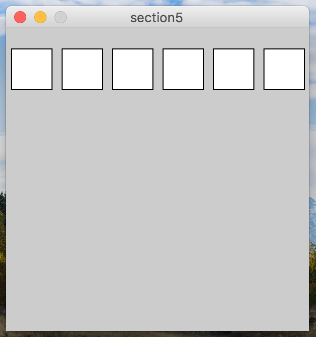
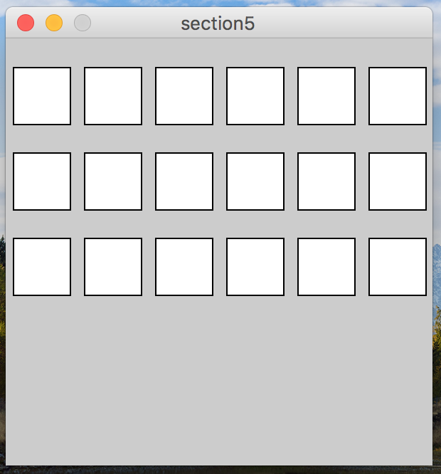
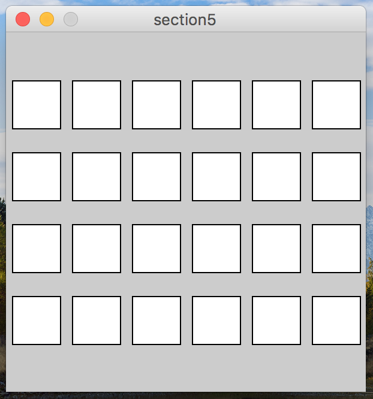
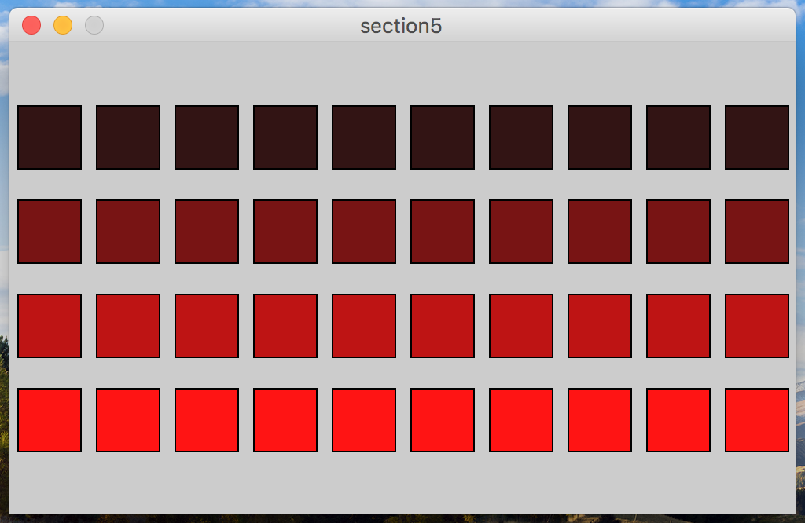
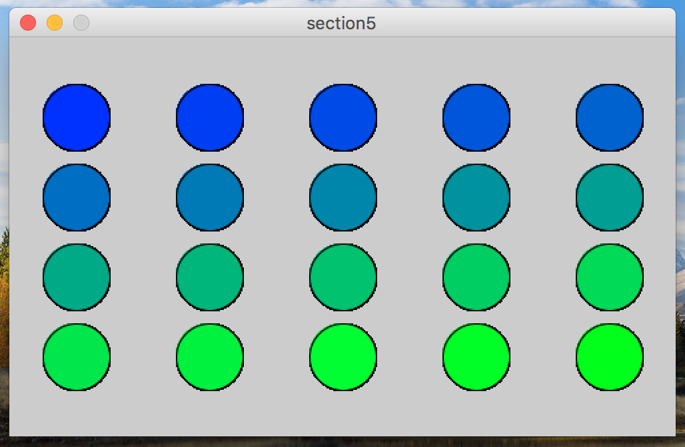

In this section, you’ll be learning about nested for-loops (putting a for-loop inside of another for-loop).
|  | Open up processing, and write a program that draws the below pattern using a single for-loop. |
|  | Next, modify the code you wrote above to generate this canvas instead. Do so using three separate for-loops, one after the other. You can just copy-paste the first for loop, and change the Y coordinate of the rectangles in each. |
| Now, take a step back and consider the solution for 2. You duplicated nearly the exact same for loop, one after the other. The only thing that changed between each one is the Y coordinate of the rectangles. Whenever we see repetition with minor changes, we can typically use a for-loop to reduce the redundancy! Try drawing the same canvas again, but instead use only 2 for-loops, one inside of the other. |
|  | Now that you are using a nested for-loop, change the program so that is displays one more row of squares, pictured to the right. Most likely, you can do this by changing only the for-loop test. |
|  | Make a few more changes to your program so that the canvas looks like the one picture to the right. Notice that (A) the canvas is wider, (B) more squares are drawn in each row, (C) The fill of the circles goes from dark-red to light red as the rows progress. |
|  | Again, make some additional changes so that the canvas looks like the picture. Make sure to get the colors and spacing to match. |
You must turn in at least 3 problems to the D2L dropbox the day of section!